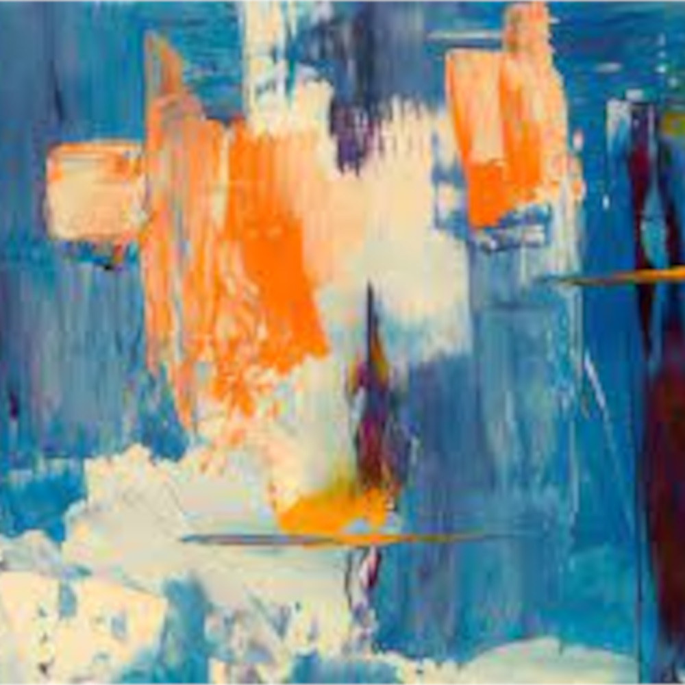

<!DOCTYPE html>
<html lang="pt-br"></html>
<head>
    <meta charset="UTF-8">
    <meta http-equiv="X-UA-Compatible" content="IE=edge">
    <meta name="viewport" content="width=
    , initial-scale=1.0">
    <title>Vanguardas Artisticas Europeias</title>
    <link rel="stylesheet" href="estilo/style.css">
    <link rel="shortcut icon" href="imagem/karm-logo.png.ico" type="image/x-icon">
</head>
<body>
    <header>
        <h1> Karmsule Corp.</h1>
        <p>Uma revolução nos seus estudos.</p>
     </header>
     <nav>       
         <a href="home.html">home</a>
         <a href="login.html">Login</a>
         <a href="noticias.html">Notícias</a>
         <a href="faleconosco.html">Fale conosco</a>
         <a href="sobrenos.html">Sobre nós</a>
     </nav>    
    <main>
        <article>
            <h1>Vanguardas Artisticas Europeias</h1>

            <h2>O que foram as vanguardas europeias</h2>

            <p>São chamadas de <strong>Vanguardas Europeias</strong>, as variadas tendências e movimentos artísticos que (obviamente) surgiram na Europa, no início do século XX. Marcou o rompimento da tradição cultural que foi mantida ao longo de todo o século XIX, trazendo novas técnicas, materiais, conceito, dentre outros.</p>

            <picture>
                <source media="(min-width: 280px)" srcset="" type="image/png">
                <source media="(max-width: 760px)" srcset="" type="image/png">
                
            </picture>

            <p>Os movimentos vanguardistas europeus que mais se destacaram ao longo do mundo foram os: futurismo; <a href="cubismo.html">cubismo</a>; surrealismo; expressionismo; dadaísmo.</p>

            <h2>Contexto Histórico</h2>

            <p>No começo do século XX, a chegada da segunda revolução industrial, trouxe consigo inúmeros avanços, na ciência, na tecnologia e na medicina, porém, mesmo com todos esses avanços, enormes problemas sociais, como a fome e a miséria ainda existiam, e acontecia em largas escala, não só na Europa.   </p>

            <p>Tendo surgido em um período onde o militarismo, fazia com que a guerra e seus impactos, fossem sentidos nas diversas camadas e faixas etárias da sociedade, as <strong>Vanguardas Europeias</strong> surgiram com o objetivo de contrariar a guerra e os seus princípios. Os artistas envolvidos nos movimentos, utilizavam da ironia, para criticar os governos e as medidas que estes tomavam, e chocar pessoas importantes (política e financeiramente falando) ou comuns, famosas ou anônimas com o intuito de que atentarem a população sobre a situação que estava se passando.</p>

        </article>
    </main>
</body>
</html>
